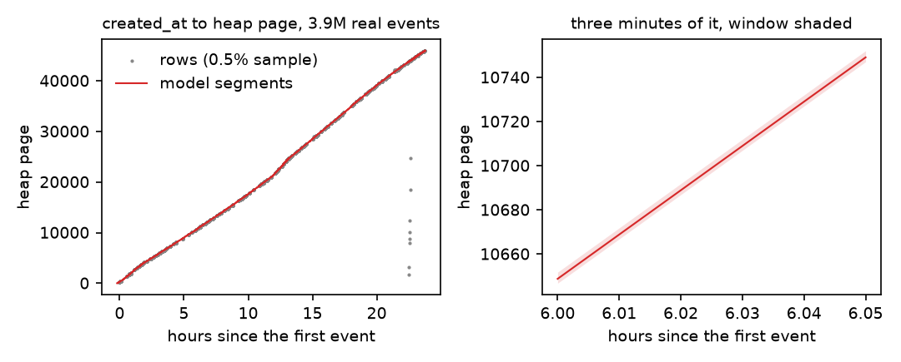
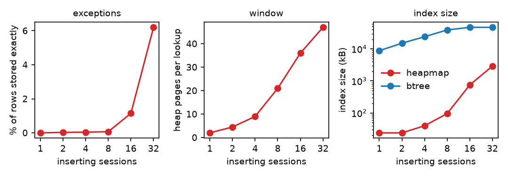
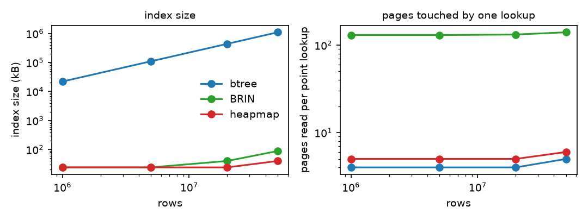

contrib/heapmap (about 3,100 lines of C, plus tests, experiments and the demo), added in the commits after it.
We added a new index access method to PostgreSQL, CREATE INDEX ... USING heapmap, for
columns whose values follow the physical order of the table: the timestamp of a log, an
event stream, a serial id. For such a column, "key to heap page" is a smooth increasing function.
The index stores a piecewise-linear model of that function and nothing per row. A lookup asks the
model which few heap pages to read, and PostgreSQL filters the rows on them. Rows that are not
where the model says, such as late arrivals or updated rows, are stored exactly in a small B+-tree
inside the index, so every answer is exact.
On a 10M-row table the index is 24 kB where a B-tree is 214 MB, builds in less than half the time, loads new rows about twice as fast, matches the B-tree on range queries and is 30 times faster than BRIN on point lookups at BRIN's size. On one day of real GitHub events (3.9M rows) it is 136 kB against a 25 MB B-tree and reads 8 heap pages per lookup where BRIN reads 460. The hardest part was keeping the model useful when many sessions insert at once; the final design stores about 1% of rows as exceptions with 16 concurrent writers, down from 86% in our first version.
PostgreSQL offers two kinds of index for a timestamp column in an append-mostly table. A B-tree is exact and fast but stores every key with a row pointer, so it is as large as the column, grows with every insert and doubles the write-ahead log of a bulk load. BRIN (block-range index) stores only a minimum and a maximum per 128 heap pages, so it is tiny, but every lookup reads a whole block range and discards almost all of it: 130 pages and 20,000 rows to find one. There is nothing in between.
Yet for these columns the physical position of a row is almost a function of its key. Learned index structures (Kraska et al., SIGMOD 2018) exploit exactly this, but the published designs index a sorted in-memory array and need rebuilding when data changes. The question of this project is whether the idea can be made to work inside a real database engine, against heap pages rather than an array, with inserts, updates, deletes, VACUUM, concurrency and crash recovery, and whether the result is useful compared with what PostgreSQL already has. The target users are the same tables people put BRIN on today: logs, sensor readings, orders and events, queried by time.
Three parts, and one rule that ties them together.
The invariant. Every indexed row is either in the tail with a key at or above the fence, or on a
page inside the model's window for its key, or in the exception tree. CREATE INDEX
establishes this, every insert re-checks it for the new row, and folding re-checks it for every row
it moves from the tail into the model. Because scans are bitmap scans, the heap scan rechecks the
predicate and visibility on every page, so the index may only ever be too generous, never
wrong.
Folding. Each time the table has grown by a few pages, the inserting backend reads the tail, fits new segments over the pages that are settled, stores any row that does not fit as an exception, and moves the frontier. VACUUM does the same and removes dead exception entries. Fitting summarises each heap page by its median key, keeps the longest non-decreasing run of those medians, fits segments through the run and sizes each window from the rows themselves; how tightly segments follow the data is chosen from the data (a cost model trades window width against exceptions). A key value that fills many pages gets a flat segment whose window is exactly those pages.

created_at. Left: 349 segments over 46,000 heap pages. Right: three minutes of it, with each
segment's window shaded. Grey dots are a 0.5% sample of the rows' real positions.
The extension lives in contrib/heapmap and uses only public server APIs: the index access
method interface (IndexAmRoutine), generic WAL (GenericXLog) for crash safety,
the buffer manager, reloptions and the bitmap scan machinery. No core file was changed; the two
contrib build lists and the root README are the only edits outside the new directory.
| file | contents |
|---|---|
| heapmap.h | page layouts (meta page with the state, model pages with sealed segments, exception pages), shared declarations |
| hm_model.c | evaluating the model, fitting segments, classifying rows as covered or exception |
| hm_build.c | CREATE INDEX / REINDEX; appending sealed segments |
| hm_insert.c | inserts, folding the tail into the model, the concurrent-writer rules, VACUUM |
| hm_scan.c | bitmap scans for equality and range predicates |
| hm_exc.c | the exception B+-tree |
| hm_am.c | access method handler, options, per-backend model cache, cost estimate, heapmap_stats, heapmap_segments, heapmap_window |
| test/, eval/, demo/ | correctness suite, experiment scripts with raw results, live demo |
Supported key types are bigint, integer, timestamp,
timestamptz and date. The planner uses the index through its cost
estimate like any other; EXPLAIN shows a Bitmap Index Scan on it. Three SQL functions
expose the inside of an index: its statistics, the segments themselves, and the heap pages one
lookup would read.
When several sessions insert at once, each fills a heap page of its own, and PostgreSQL grows a busy table by up to 64 pages at a time, handing those pages out in no particular order. Neighbouring keys therefore end up many pages apart, and a page that looks abandoned may simply not have had its turn. Our first version folded half-filled pages into the model and froze their windows; with 16 sessions, 86% of rows ended up as exceptions and the index was as large as the B-tree. Three rules fixed it:
exception_pct). When new rows stop fitting its line,
it is sealed and new segments are fitted.The result is that lookup cost degrades gradually with the number of writers, following the scatter that is physically there, while the index stays small (section 5.2).
test/run_tests.sh compares the exact set of rows the index returns with a sequential scan,
for random equality and range predicates, on sixteen tables: sorted, jittered, 2% late rows, whole
batches out of place, heavy duplicates, fully random, negative keys, NULLs, empty, one row, one
repeated key, rows of very different lengths, and each key type. The checks are repeated after
appends, late inserts, row-at-a-time inserts, updates that move rows and updates that do not,
deletes, VACUUM, reuse of freed space and REINDEX; then with 16 concurrent clients inserting,
reading and deleting; and finally after an immediate shutdown right after a bulk insert, to
exercise WAL recovery. The suite passes on the submitted code.
PostgreSQL 18.7, Intel i7-13620H (16 threads), 16 GB RAM, NVMe SSD, Ubuntu 24.04, everything cached in
memory. Each number is from one run on one machine: sizes and page counts are exact, timings are
medians of alternating rounds and should be read as indicative. Raw output is in
contrib/heapmap/eval/results/ and every table below can be regenerated with the scripts in
contrib/heapmap/eval/.
eval/quick_compare.sh)Keys increase with a random gap, like event timestamps. Table: (k bigint, payload int), 423 MB.
| btree | BRIN | BRIN, 8 pages/range | heapmap | |
|---|---|---|---|---|
| Index size | 214 MB | 32 kB | 240 kB | 24 kB |
| Build time (one core) | 2.18 s | 0.78 s | 0.79 s | 0.86 s |
| Pages read per point lookup | 4 | 131 | 45 | 5 |
| Point lookup, in server | 2.6 µs | 537 µs | 567 µs | 15.9 µs |
| Range query, about 10,000 rows | 735 µs | 1,250 µs | 1,247 µs | 594 µs |
| Loading 2M more rows | 2.24 s | 1.02 s | 0.94 s | 1.23 s |
| WAL written by that load | 264 MB | 139 MB | 138 MB | 138 MB |
| Index size after the load | 257 MB | 32 kB | 240 kB | 24 kB |
Read plainly: the index is the size of BRIN and about 30 times faster than BRIN on point lookups. Against the B-tree it is several thousand times smaller, loads data about twice as fast with half the WAL, and is on par for range queries, but a cached point lookup is about six times slower, because it filters whole heap pages where the B-tree goes straight to the row. After the load the model has absorbed the new rows through folding and the index has not grown.
eval/concurrent.sh)Each session runs INSERT INTO t VALUES (nextval('seq')) for 8 seconds with
synchronous_commit off. "Window" is the average number of heap pages a lookup reads.
| Sessions | Rows | Stored as exceptions | Window | heapmap | btree |
|---|---|---|---|---|---|
| 1 | 0.40M | 0.00% | 2 | 24 kB | 8.8 MB |
| 2 | 0.69M | 0.03% | 4.5 | 24 kB | 15 MB |
| 4 | 1.13M | 0.04% | 9 | 40 kB | 24 MB |
| 8 | 1.81M | 0.07% | 21 | 96 kB | 39 MB |
| 16 | 2.18M | 1.15% | 36 | 752 kB | 47 MB |
| 32 | 2.17M | 6.20% | 47 | 2.9 MB | 47 MB |
With a mix of single-row inserts, 300-row inserts, late rows, reads and deletes: 0.25% exceptions with 4 sessions (384 kB against a 92 MB btree) and 1.66% with 16 (1.3 MB against 58 MB). Before the rules of section 4.2, the 16-session run stored 86% of its rows as exceptions. The window grows because that is how far apart PostgreSQL really puts neighbouring keys; the index reports what the heap looks like rather than hiding it.

eval/gharchive.sh)
Every public GitHub event of 1 January 2024 from GH Archive, 3,879,843 events, loaded in the order
they were recorded and indexed on created_at (one-second resolution, 45 events per second).
The stream is nearly but not perfectly ordered: 0.19% of events have a timestamp behind an earlier
event, by up to 58 minutes. The first 95% are loaded and indexed; the last 5% are appended afterwards.
| btree | BRIN | heapmap | |
|---|---|---|---|
| Index size (table 342 MB) | 25 MB | 32 kB | 136 kB |
| Build time | 0.91 s | 0.35 s | 0.74 s |
| Pages read per "events at this second" (45 rows) | 4.0 | 459.6 | 8.1 |
| Time per such lookup, cached | 11 µs | 1,867 µs | 29 µs |
| "Everything in a 5-minute window" (13,500 rows) | 480 µs | 3,142 µs | 827 µs |
| Appending the last 194k events | 0.45 s, 46 MB WAL | 0.37 s, 34 MB | 0.40 s, 34 MB |
| Index size after the append | 27 MB | 32 kB | 176 kB |
The model has 261 segments with an average window of 5.3 pages, and 6,390 exception entries: 0.17% of the rows, which is the share of the stream that really is out of order. BRIN suffers from exactly those rows: one late event inside a 128-page range stretches that range's minimum, so a lookup matches several ranges and reads 460 pages. heapmap stores the late row exactly and keeps its window at five pages. After the append, the correctness check still finds the index and a sequential scan in agreement on every query.
eval/scale.sh)| Rows | btree size | heapmap size | btree build | heapmap build | pages per lookup btree / BRIN / heapmap | heapmap model |
|---|---|---|---|---|---|---|
| 1M | 21 MB | 24 kB | 0.21 s | 0.14 s | 4 / 130 / 5 | 3 segments, 13 exceptions |
| 5M | 107 MB | 24 kB | 0.91 s | 0.46 s | 4 / 130 / 5 | 19 segments, 96 exceptions |
| 20M | 428 MB | 24 kB | 3.95 s | 1.57 s | 4 / 132 / 5 | 71 segments, 361 exceptions |
| 50M | 1,071 MB | 40 kB | 8.76 s | 3.87 s | 5 / 140 / 6 | 179 segments, 935 exceptions |
The model grows with the number of distinct slopes in the data, not with the number of rows: a 50M-row table with a steady arrival rate needs a few hundred segments. Build time is a single pass over the heap plus a sort of (key, page) pairs. Lookup cost is flat: 15 to 17 µs per cached point lookup from 1M to 50M rows.

max_window pages of scatter rows become exceptions (6% at 32 sessions on this machine).CREATE INDEX holds one 16-byte record per row in memory while fitting.cd contrib/heapmap ./cluster.sh init && ./cluster.sh install # private PostgreSQL 18 cluster, port 5545, no sudo demo/demo.sh # live walk-through vs btree and BRIN, 3 minutes demo/demo_real.sh # one day of real GitHub events test/run_tests.sh # correctness suite eval/quick_compare.sh eval/concurrent.sh eval/gharchive.sh eval/scale.sh
Or into an existing PostgreSQL 18: make USE_PGXS=1 && sudo make USE_PGXS=1 install, then
CREATE EXTENSION heapmap. The demo builds the same 5M-row event table three times, one
index each, and measures everything in front of the audience: build time, sizes, pages read per
lookup, a range query, loading more rows, late rows and an update, eight sessions inserting at once
with the index sizes sampled every two seconds, and a check that the index and a sequential scan
return the same rows.
Kraska et al. (2018) proposed replacing B-tree internals with learned models over a sorted array; ALEX (2020) and the PGM-index (2020) made such models updatable, still over their own arrays in memory. BRIN in PostgreSQL and zone maps in Netezza, Oracle and others summarise blocks with minimum and maximum values. heapmap combines the two views: it is a block-range index whose summary is a learned model of position, it indexes the heap in place rather than a copy of the keys, and it handles the parts those papers leave out of a real engine: a tail for in-order inserts that costs nothing, an exact exception store that bounds the damage of any row, folding that keeps the model current without rebuilding, and rules that keep a model honest when many sessions write to the same table. Every piece was tested against PostgreSQL's own sequential scan.
Use of AI. The design and the code were developed together with Claude (Anthropic) as a pair programmer; every design decision above was driven by measurements on this machine, and every claim in this report was produced by the scripts in the repository.